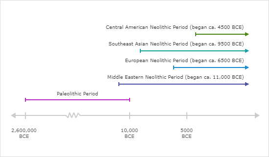

Історічні періоди
Доісторична епоха ділиться на два основні періоди: палеоліт,або "Старий кам'яний вік", і неоліт, або "Новий кам'яний вік". Подивіться на хронологію. Потім дотримуйтесь інструкцій нижче.

Залежно від часової шкали, які з наступних тверджень вірні?